/dynamic partial reconfiguration
January 2026 | FPGA, Verilog, Dynamic Reconfiguration | 12 min read
Most FPGA designs are static—you configure the device once at power-on and it stays that way until you power cycle. Dynamic Partial Reconfiguration (DPR) changes this. You can swap out portions of the design while the rest keeps running.
I built three implementations of matrix multiplication to understand when DPR actually makes sense: a static 2×2 design, a static 3×3 design, and a DPR design that switches between both at runtime.
What is DPR?
Traditional FPGA designs are all-or-nothing. Want to change functionality? Power down, load new bitstream, power up. Takes seconds and stops everything.
DPR divides the FPGA into two regions: a static region that never changes, and a reconfigurable partition that can be swapped at runtime. Load a tiny partial bitstream (492KB instead of 15MB), wait 1.23 milliseconds, and you've got different functionality—while the static region kept running the whole time.
The Promise: One FPGA, multiple functions, runtime switching.
The Question: What does it actually cost?
The Experiment
I implemented three designs on a Xilinx KCU116 (Kintex UltraScale+) development board:
- 2×2 Matrix Multiplication (Static) — Baseline implementation, always does 2×2
- 3×3 Matrix Multiplication (Static) — Baseline implementation, always does 3×3
- DPR Design (Reconfigurable) — Switches between 2×2 and 3×3 at runtime
All three target 100 MHz and use lookup-table based matrix multiplication. Same algorithm, same I/O interface, different implementation strategies.
Implementation Views
Here's what each design looks like on the FPGA fabric:
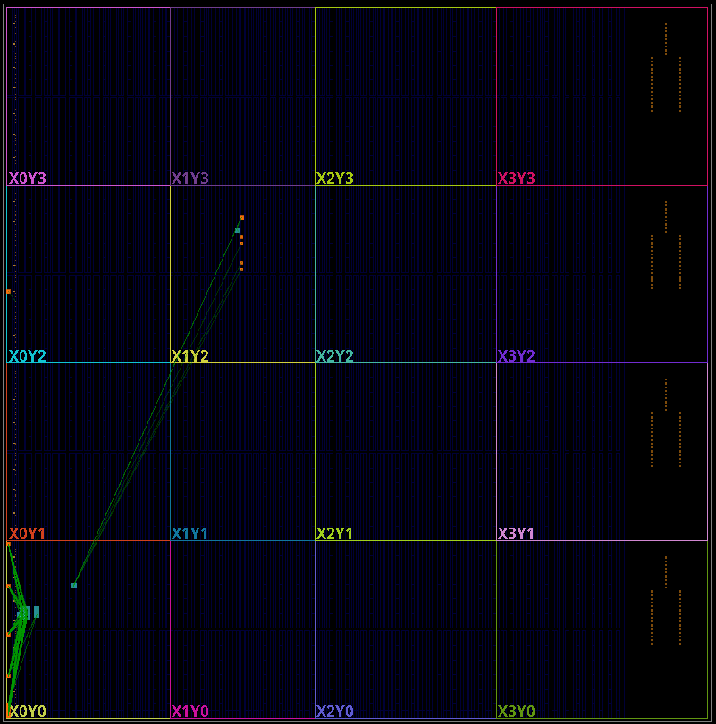2×2 static design: 55 LUTs, minimal footprint
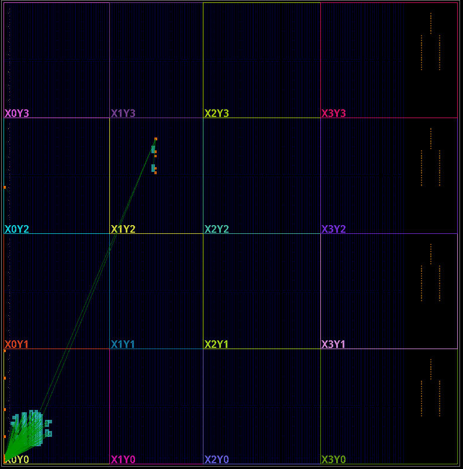3×3 static design: 840 LUTs, denser logic placement
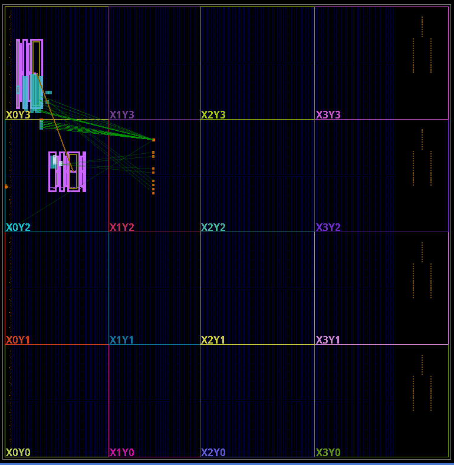DPR design: 929 LUTs with reconfiguration framework
The DPR design has visible partitioning—you can see the boundary between static and reconfigurable regions. The physical floorplan is more constrained because partition boundaries add routing restrictions.
Resource Usage: The Overhead Question
If you need both 2×2 and 3×3 functionality with traditional static designs, you'd need two separate FPGAs or a design that implements both simultaneously. That would cost 55 + 840 = 895 LUTs.
The DPR design uses 929 LUTs. That's only +34 LUTs more—a 3.8% overhead for the reconfiguration infrastructure.
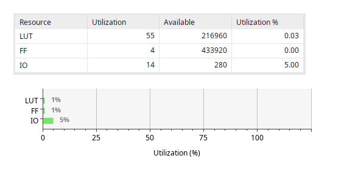 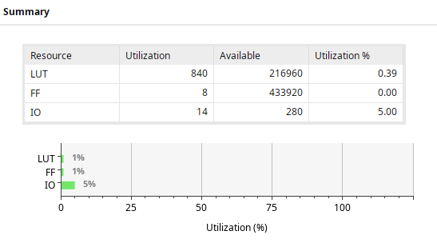 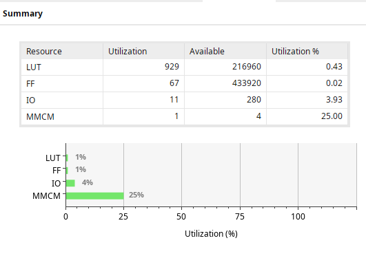| Resource | 2×2 Static | 3×3 Static | DPR | Notes |
|---|---|---|---|---|
| LUTs | 55 (0.03%) | 840 (0.39%) | 929 (0.43%) | DPR = both + 34 overhead |
| Flip-Flops | 4 | 8 | 67 | DPR needs state management |
| CARRY8 | 6 (0.02%) | 81 (0.30%) | 92 (0.34%) | Both + 5 for counter |
| F7/F8 Muxes | 0 | 18 | 15 | DPR optimizes differently |
| MMCM | 0 | 0 | 1 (25%) | Clock management |
Key Finding: The DPR framework itself is efficient—only 3.8% overhead. The real costs show up elsewhere.
Timing: Performance Gain
DPR designs usually have worse timing because partition boundaries constrain routing. I expected the DPR design to be slower.
It was 9.3× faster.
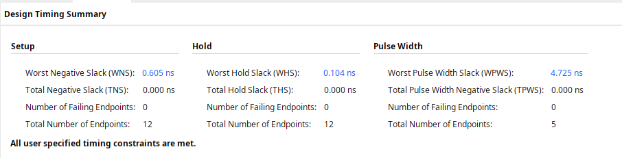 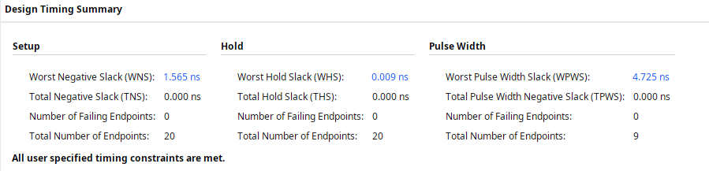 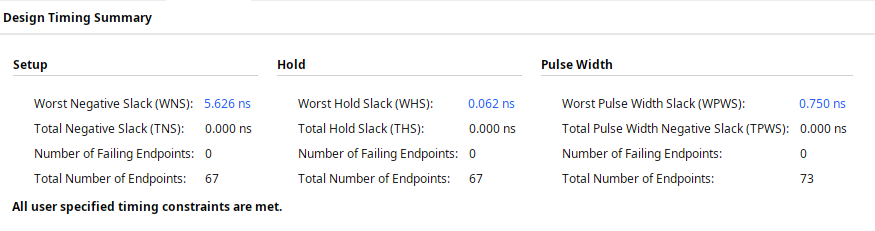| Design | WNS (Slack) | Max Frequency | Notes |
|---|---|---|---|
| 2×2 Static | +0.605 ns | ~166 MHz | Baseline |
| 3×3 Static | +1.565 ns | ~164 MHz | 2.6× better than 2×2 |
| DPR | +5.626 ns | ~277 MHz | 9.3× better than 2×2 |
The DPR design can run 67% faster than the static designs. Why?
- Forced floorplanning: DPR requires explicit partition placement, which can lead to better locality
- Less runtime congestion: Only one configuration is active at a time
- Aggressive DFX optimization: Vivado's DFX flow applies more aggressive place-and-route
This was the biggest surprise. DPR's constraints actually helped timing instead of hurting it.
Power: The Real Cost
This is where DPR pays the price.
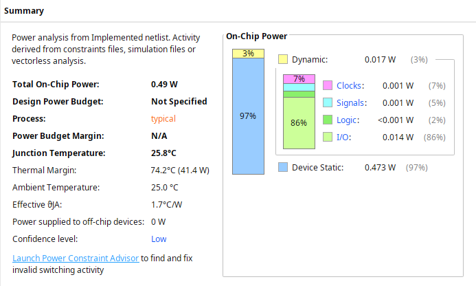 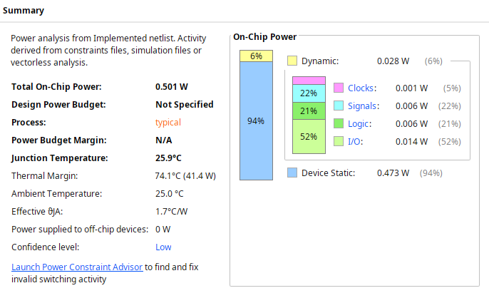 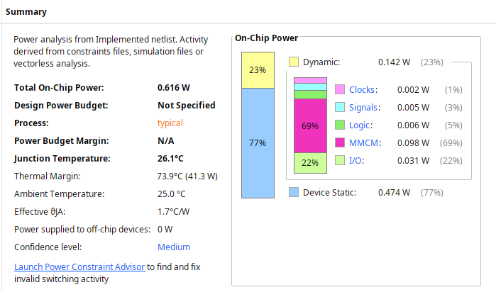| Metric | 2×2 | 3×3 | DPR | DPR vs 3×3 |
|---|---|---|---|---|
| Total Power | 0.490 W | 0.501 W | 0.616 W | +23% |
| Dynamic Power | 0.017 W | 0.028 W | 0.142 W | +407% |
| Static Power | 0.473 W | 0.473 W | 0.474 W | +0.2% |
DPR adds 23% to total power and 407% to dynamic power compared to the 3×3 static design. Where does it go?
| Component | Power | % of Dynamic |
|---|---|---|
| MMCM (Clock Management) | 0.098 W | 69% |
| I/O | 0.031 W | 22% |
| CLB Logic | 0.006 W | 4% |
| Signals | 0.005 W | 3% |
| Clocks | 0.002 W | 1% |
The MMCM alone costs 0.098W—that's 69% of all dynamic power. This is the continuous cost of the reconfiguration infrastructure running in the background.
The actual reconfigurable logic is power-efficient. The overhead is the always-on clock management circuitry needed to support runtime reconfiguration.
Reconfiguration Performance
How fast can you actually switch between 2×2 and 3×3?
Partial Bitstream Size: 492 KB (both configs)
PCAP Configuration Rate: 400 MB/s
Reconfiguration Time: 1.23 milliseconds1.23 ms to completely swap functionality. That's 123,000 clock cycles at 100 MHz.
Is that fast? Depends on your application:
- Fast enough for video processing (frame-level switching)
- Fast enough for batch processing (job-level switching)
- Fast enough for adaptive algorithms (mode switching)
- Too slow for packet processing (sub-microsecond required)
- Too slow for real-time control (deterministic nanosecond timing)
You could switch configurations ~813 times per second if needed. The partial bitstream is only 3.3% the size of the full bitstream (492 KB vs 15 MB), which is why reconfiguration is so fast.
The Matrix Multiplication Scaling Problem
One unexpected finding: matrix multiplication scales superlinearly in FPGA resources.
| Design | Multiplications | LUTs | LUTs per Mult |
|---|---|---|---|
| 2×2 | 4 | 55 | 13.75 |
| 3×3 | 9 | 840 | 93.3 |
Going from 2×2 to 3×3 multiplies operations by 2.25× but multiplies resource usage by 15.3×. Efficiency degrades by 6.8× because the accumulation tree and interconnect complexity grows faster than the computation itself.
This is why DPR makes sense for this application—you're not just saving 895 LUTs vs 929 LUTs. You're avoiding the superlinear scaling penalty of implementing both sizes simultaneously.
When to Use DPR
Use DPR when:
- You need multiple functions but not simultaneously
- Runtime switching latency of 1-10ms is acceptable
- You can tolerate 20-30% power overhead
- Resource sharing saves meaningful area (>100 LUTs)
- Your application switches modes less than ~1000×/second
- Design complexity is worth the flexibility
Avoid DPR when:
- You only need one configuration ever
- Power efficiency is critical (DPR's MMCM is always on)
- Sub-millisecond switching is required
- Simpler static design meets requirements
- Both functions need to run simultaneously
- Resource savings are minimal (<50 LUTs)
Bitstream Storage Trade-off
| Design | Full Bitstream | Partial Bitstream | Total Storage |
|---|---|---|---|
| 2×2 Static | 3.8 MB | N/A | 7.7 MB (both) |
| 3×3 Static | 3.9 MB | N/A | |
| DPR | 15 MB | 492 KB × 2 | ~16 MB |
The DPR full bitstream is 4× larger (15 MB vs 3.8-3.9 MB) because it includes the reconfiguration framework. If you need both configurations available, DPR requires 2.1× more storage (16 MB vs 7.7 MB).
But the partial bitstreams are tiny—only 492 KB each, which is 3.3% of the full bitstream. This is why runtime reconfiguration is fast.
What I Learned
DPR overhead is mostly power, not area. The 3.8% resource overhead is negligible. The 23% power penalty from the always-on MMCM is the real cost.
Timing can improve with DPR. Forced floorplanning and reduced runtime congestion can actually help timing closure instead of hurting it.
Partial bitstreams are efficient. 492 KB is 3.3% of the full bitstream size, which enables sub-millisecond reconfiguration.
Reconfiguration is fast enough for most applications. 1.23 ms switching time works for video processing, batch jobs, and adaptive algorithms. It's too slow for packet processing or hard real-time control.
Matrix multiplication scales superlinearly. Going from 2×2 to 3×3 increased resources by 15.3× for 2.25× more operations—efficiency degrades 6.8× due to interconnect complexity.
The MMCM is the power killer. 69% of DPR's dynamic power goes to clock management infrastructure, not the actual reconfigurable logic.
Design Rule Check
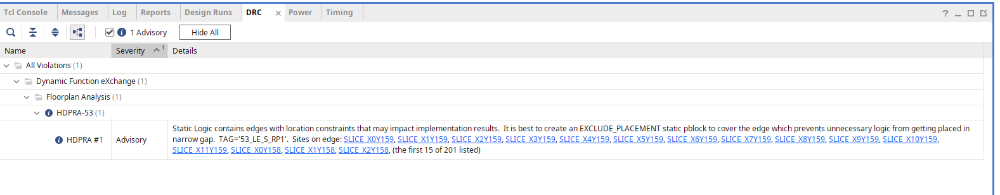The DPR design passed all critical DRC checks with one advisory warning (HDPRA-53) about floorplan constraints. This is expected for DPR designs—the warning confirms that partition boundaries are properly defined.
Final Thoughts
Dynamic Partial Reconfiguration is a powerful technique when you need runtime flexibility and can accept the power trade-off. For this matrix multiplication case study, DPR provided:
- 3.8% resource overhead (929 vs 895 LUTs)
- 1.23 ms reconfiguration time
- 1.7× higher maximum frequency
- 23% power penalty
- 2.1× more bitstream storage
If you need both 2×2 and 3×3 matrix multiplication and can tolerate the 115 mW power increase, DPR saves board space and provides runtime flexibility. If you only need one mode or power is critical, stick with static designs.
The real lesson: there's no universal answer. DPR is a tool with specific costs and benefits. Understanding them lets you make the right trade-off for your application.
Technical details:
- FPGA: Xilinx KCU116 (xcku5p-ffvb676-2-e)
- Family: Kintex UltraScale+
- Tool: Vivado 2025.2
- Clock: 100 MHz (all designs)
- Implementation: Lookup-table based matrix multiplication
- Reconfiguration: PCAP interface at 400 MB/s
- Tested: Both FPGA hardware and simulation